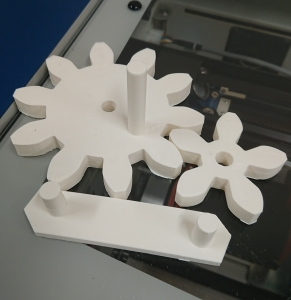

3年 12月
-目次-
-12/3-12/9-
1.前回出力した卵の改善
前回出力した卵は、はめ込みの部分を棒と穴にしてしまったため、棒があなに刺さったまま折れてしまったりしたため、
今回はどこでもはめ込めるようにしたのとサイズを小さくした


前回と同じように、サポートがきれいに取れないため、蓋の部分がきれいに出なかった
はめ込み部分は、円形がきれいに出力されていなかったため、はめ込みがきれいに行えなかった
蓋の部分がきれいに出できるように頂点をもっと平らにすることも考えたが、面白い方向に転がったり、握り心地が悪くなると考え、
もっとカーブをなだらかにする必要があると考えた
2.歯車
小さいころから歯車の仕組みが好きで、良く眺めていたので、作ってみようと思った

きれいに出力できたが支柱と穴のサイズが同じで簡単に入らなかったうえ、
密度が低かったため簡単に折れてしまった
現在調整した支柱を出力中
サイズが大きくなりすぎてしまったので小さいサイズのものを作る必要がある